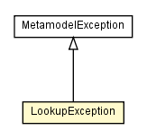

chameleon.core.lookup
Class LookupException

java.lang.Object
 java.lang.Throwable
java.lang.Exception
chameleon.core.MetamodelException
chameleon.core.lookup.LookupException
java.lang.Throwable
java.lang.Exception
chameleon.core.MetamodelException
chameleon.core.lookup.LookupException
- All Implemented Interfaces:
- Serializable
public class LookupException
- extends MetamodelException
This is a class of exceptions that report the occurrence of an error during lookup.
This class k
- See Also:
- Serialized Form
| Methods inherited from class java.lang.Throwable |
fillInStackTrace, getCause, getLocalizedMessage, getMessage, getStackTrace, initCause, printStackTrace, printStackTrace, printStackTrace, setStackTrace, toString |
_selector
private DeclarationSelector _selector
_crossReference
private CrossReference _crossReference
LookupException
public LookupException(DeclarationSelector selector)
LookupException
public LookupException(String message,
Exception exc,
DeclarationSelector selector)
LookupException
public LookupException(String message)
LookupException
public LookupException(String message,
CrossReference ref)
LookupException
public LookupException(String message,
DeclarationSelector selector)
LookupException
public LookupException(Exception exc,
DeclarationSelector selector)
setSelector
public void setSelector(DeclarationSelector selector)
selector
public DeclarationSelector selector()
setCrossReference
public void setCrossReference(CrossReference ref)